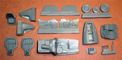
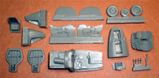
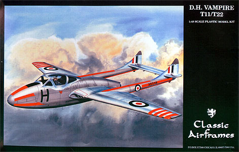
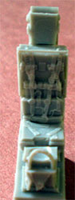
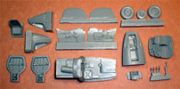
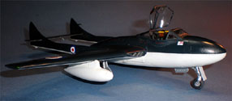

{kind=link}
 

{kind=link}
{kind=link}
{kind=link}
{kind=link}
You may click on the small images above to view larger pictures
Classic Airframes 1/48 D.H. Vampire NF.10 and T11/T22 Trainer

Kit #492 & #493
MSRP $55.00 & $49.95 $33.00 from Great Models Webstore
Images and text Copyright � 2008 by Matt Swan
Developmental Background
The Luftwaffe obviously got the jump on everybody with the introduction of the Me-262 twin engine jet fighter and the introduction of the first operational single engine fighter shortly after that, the He-162 Salamander but the world was not long in catching up. In England the Gloster Meteor was under development and was secretly being used to intercept and eliminate the infamous Buzz Bomb. As these aspects of history played themselves out De Havilland was approached to construct an airframe around Frank Halford�s H.1 Goblin centrifugal-flow jet engine. De Havilland put together a simple yet elegant airframe designed to provide the best weight to carry a pilot, an engine, an armament package and some fuel aloft. This began with the DH.99 mixed material design which was developed into the DH.100 �Spider Crab�. The name was later changed to �Vampire� and a new page in aviation history was begun.
Design work on this aircraft type actually began in mid 1942. De Havilland utilized an egg shaped fuselage to house the Goblin engine and a twin boom structure to avoid interfering with hot exhaust gasses. Since every ounce of thrust the engine could produce was needed to keep the aircraft moving this fuselage design eliminated any complex air intakes or long exhaust paths that would have stolen thrust. The prototype Vampire did not take flight until 1943 and the final production version was not test flown until 1945 so the type never saw active service during the Second World War. However it did see plenty of action in the coming years. The single seat fighter version was produced and sold to many other air forces around the world and the type set numerous records in the history books. With the obvious success of the single seat fighter version it did not take long before a Night Fighter version was proposed.
The NF.10 was the Night Fighter version and three squadrons were in service from 1951 to 1954. While these aircraft perform well at night they were also used extensively for daylight operations. Overall De Havilland produced only 95 Night Fighter Vampires of which 66 were of the NF.10 and 29 were NF.54. The NF.54 simple was an export version manufactured for the Italian Air Force. With the development of the two seater version a further evolution of this particular airframe resulted in a trainer version. One notable item at this point in the design evolution was the introduction of ejection seats. No earlier version of the Vampire offered this feature and I understand it was a very challenging operation to bail out of one of these aircraft. It was not until 1967 that ejection seats were retrofitted into the Vampire series of aircraft. Production of the Vampire ceased in 1953 but some aircraft remained in active service until 1990 and today there are many flying examples of single seat version of this elegant little jet fighter.
The Kit
Classic Airframes broke new ground with the release of an accurate single seat De Havilland Vampire and have continued development of the Vampire family with the T11/T22 trainer and the Night Fighter 10 kits. All the Vampire aircraft had a common tail assembly so the step up to the twin seat models was not a drastic one. The kits include a new wider body that is common to both variants. There are some differences between the kits such as the Night Fighter kit has an additional set of plastic injection nose cones that accurately replicate what was seen on the NF.10. Both kits include a small bag of resin goodies that cover the cockpit interior, wheel wells and intakes among other things. There are several common pieces in these bags but there are also some unique pieces to each model. Each kit also includes a single piece injection molded canopy that will need some careful cutting to display open. The clear piece seems to be nicely thin and shows well defined raised frame lines and good clarity.
First let�s take a look at the injection molded plastic pieces. The kits both include basically two large plastic sprues done in a medium dark gray poly styrene. The larger of the sprues has been cut at the factory to fit into the packaging. Other than the addition of the NF nose the plastic parts are identical with both kits. They include crisp finely engraved panel lines and access hatch releases. All parts are connected to the tree with medium sprue gates. Inside the wings and fuselage we have some large injector pins but they do not appear to be in any positions to cause trouble with assembly. Wing and fuselage pieces line up nicely and all panel lines seem to meet well. Since I am actually looking at two kits here I can get a good idea of overall parts quality and I am seeing some issues. Specifically we have some large casting boogers in the fuselage of the night fighter but only hints of these same boogers on the T11/T22 kit. I would guess that the problem with the molds is progressive and the NF kit I have was shot after the T11/T22 kit. These boogers which appear around the lower fuselage panel and the cockpit area are not kit killers but definitely need to be cleaned up and are rather annoying. Both kits have a large defect within the engine fan that looks about impossible to clean up; fortunately you will have a real hard time seeing this part once the kits are built. When looking at the parts images below the boogered fuselage area and the NF nose cone are highlighted in the picture. Other than these couple of issues the rest of the parts are all perfect.
Each kit includes a small bag of resin detail pieces. The image below is of the night fighter resin package which includes a type specific instrument panel and sidewalls. The floor pan is also unique to the NF version. The trainer version includes a different IP and sidewalls along with its own unique floor pan and seats.
 The trainer seats have great seatbelt detail molded in place but the NF version has none and the modeler will have to source that on his own. Here are a couple of close up shots of the different instrument panels and the trainer version seats. The side walls feature trim wheels and cabling cast in place and are well done. Common pieces with both kits are things like resin wheel wells that fit very nicely into the wings with very little sanding. Wing mounted engine intakes are resin and are a nearly perfect fit into the wing, little or no putty work will be needed here. Also in the resin bag are wheels, the nose gear bay including gun ports, rudder pedals and elevator tips. Overall the resin pieces are well made, don�t seem to have any micro bubble issues and fit the kit well.
Taking a quick inventory we have 47 plastic pieces in the Night Fighter kit but two of these are trainer nose pieces that will not be used and 45 pieces in the Trainer kit. The NF kit has 19 resin pieces and the Trainer has 18. Both kits include a single clear part which gives us 67 pieces in the NF kit and 64 pieces in the Trainer kit. While not a huge parts count for either kit there is plenty of detail packed into both models. A final note before we get into the images of the parts below, the last shot of the resin parts for the trainer are only the parts that are not common to both kits.

You may click on the small images above to view larger pictures
Decals and Instructions
Instructions for these kits come in several parts; first is a simple 8.5 by 14 inch sheet folded in half with some historical background of the aircraft type, a simple paint chart and a complete parts map. Each kit�s sheet includes ten exploded view assembly steps that include a variety of building tips and some color call-outs. We get three 8.5 by 5.5 inch sheets that cover basic stencil placement for the type and two sheets devoted to different marking and painting options, simple yet comprehensive and looks to get the job done.
With each kit we get two sheets of decals; the smaller sheet is a common set of aircraft stencils and the larger sheet covers the operational units. With the T11/T22 we get markings for two colorful trainer units and a single T22 Sea Vampire in Sea Blue over White. With the Night Fighter we get markings for two RAF units and a single Italian unit. The decal sheets contain plenty of stencils and service markings, all the decals have excellent print registry and great color density. I�ve used Classic Airframes decals before and they react very well with your common decal setting solutions.
Conclusions
Classic Airframes is not the first company to kit the Vampire or the Night Fighter version but they certainly did the best job. There is a Hobby Craft release of the NF kicking around and Kitech out of Chine did the DH100 single seater but none of these can hold a candle to the CA kit. The kit is very well engineered, the resin parts fit without lots of extra work, panel lines all mate up, dimensional accuracy is good, decals are excellent and instructions will get the job done.
There are a few aftermarket items out there that could be used with these kits such as some Eduard paint masks and a Flight Path photo etch set for the trainer version. Xtradecals does a single sheet of decals for both the NF.10 and the T11 types. Unless you plan on doing some surgery to drop the flaps these extra sets are not really necessary as the kits are fairly comprehensive all by themselves. While in the experienced modeler classification I give both these kits very good recommendations.
7/24/08
Construction
I decided to build the T.11/T.22 as a Sea Vampire. As usual construction begins with the interior cockpit tub, things went together very well and I only added some Mike Grant instrument decals. When it came time to close up the fuselage I did run into some slight difficulty fitting the cockpit tub in place. The alignment piece molded into the inner fuselage wall presented a problem and needed to be ground off to get a good and straight fit, otherwise things went together very well. I did add about three large lead fishing sinkers to the nose of the fuselage. The wings were glued together and the resin wheel wells dropped into place perfectly. I took some extra time gluing the wings to the fuselage making sure they were lined up properly and this really paid off later on in the build. The tail booms were assembled and the elevator glued in place. While the glue was still soft I butted the booms to the wings, glued them and spent about thirty minutes repeatedly checking the alignment while the glue set up. In the end I had a pretty good alignment and everything looked pretty straight. Final exterior details were placed and I moved to the cockpit glazing. The kit provides the part as a single piece but I wanted to display the pit open. I was not even sure how the canopy was supposed to open and after an extensive internet search found a single shot of a T.11 with the canopy in the raised position. Using a JCL Razor saw I carefully cut the canopy apart, sanded the cut edges a little and dipped it in Future.
The forward and aft sections were masked and glued in place then the intakes, cockpit and wheel wells were packed with damp tissue paper in preparation for paint. Overall construction was a breeze, Classic Airframes did a very good job engineering the parts and laying out the directions. I feel this build is something just about any modeler should be able to handle.
You may click on the small images above to view larger pictures
Paint
I am doing a Sea Vampire of which there were very few and those were all well maintained so a clean paint job is called for with very little weathering effects. I dispensed with preshading and went straight to a flat white for the underside. Once this dried I masked the demarcation line and applied a flat dark sea blue on the upper surfaces. The demarcation masks were removed and a few minor paint glitches were touched up before proceeding. Small things like the engine exhaust were painted and allowed to dry before a couple coats of Future cut with isopropyl alcohol were applied with some light sanding between coats. Decals went on and presented no problems at all. I used Micro-Sol as my setting solution and they behaved very nicely. Once the decals were dried down I mixed some Future with Simple Green for my final seal coat. The addition of Simple Green provides for a very shiny finish with almost a wet look. On the down side this mixture holds a large anionic charge and will attract dust like nothing else so a good sized box is needed to act as a dust shield while curing.
Final Details
I finished off the landing gear and added the wheels. The center section of the canopy was masked and painted. After the masks were removed it was attached with a thin bead of medium superglue followed with a shot of accelerator. The last item was the addition of the wing drop tanks attached with superglue and the model was complete. Calendar wise I spent about two weeks on this build but total time at the work bench was something closer to thirty hours. It was a very quick and pleasant build and I am looking forward to building a couple more of the Classic Airframes Vampire kits. During construction I did find one piece missing and that was the forward nose gear door which was listed in the instructions as a resin part. Wondering if maybe I had just lost the piece during the shuffle I checked two other Vampire kits in the stash and they were all missing the same part. No big deal really as I was able to quickly make a replacement from some thin plastic stock.

You may click on the small images above to view larger pictures


{kind=link}
{kind=link}
{kind=link}
{kind=link}
{kind=link}
{kind=link}
{kind=link}
{kind=link}
{kind=link}
{kind=link}